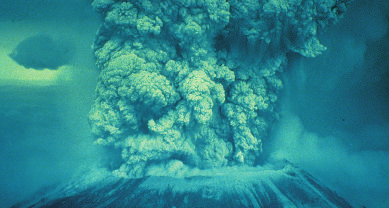
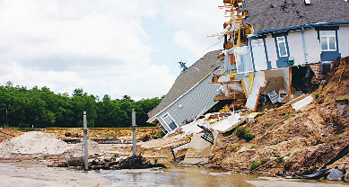
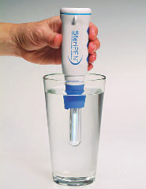
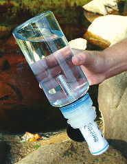

MY
BUS you could be in danger from people trying to hurry outside. If you’re inside, get under a table or desk and hang on to it.
After an Earthquake
■ Expect aftershocks. Listen to a battery-operated radio or television for the latest emergency information.
■ Use the telephone—including cell phones—only for emergency calls.
■ Open cabinets cautiously. Beware of objects that could fall off shelves.
■ Stay away from damaged areas.
■ Help injured or trapped persons if you can do so without endangering yourself.
■ Clean up spilled medicines, bleach, gasoline, or other flammable liquids immediately.
■ Inspect the entire length of chimneys for damage. Unnoticed damage could lead to a fire.
■ Inspect utilities. Check for gas leaks. Look for electrical system damage. Check for sewage and water line damage.
■ If you live in a coastal area, be aware of possible tsunamis. See the next section.
TSUNAMI
A tsunami (pronounced soo-ná-mee), also called a “seismic sea wave”
(or, mistakenly, “tidal wave”), is a series of enormous waves created by an underwater disturbance such as an earthquake. These waves can
DIS-
ASTER
2182_Tab07_154-198.qxd 8/18/11 12:34 PM Page 188
DIS-
ASTER
also be generated by coastal or underwater landslides, volcanic eruptions, or meteor impacts in the water. Tsunamis threaten coastal populations of the Pacific and other oceans and seas.
A tsunami can move hundreds of miles (or kilometers) per hour in the open ocean and smash into land with waves as high as 100 ft
(30 m) or more. Areas are at greater risk if they are less than 25 ft
(8 m) above sea level and within a mile of the shoreline. Drowning is the most common cause of death associated with a tsunami. Hazards include flooding, contaminated drinking water, and fires from gas lines or ruptured tanks.
TSUNAMI ADVISORY: This indicates the recent occurrence of an earthquake, which could generate a tsunami.
TSUNAMI WATCH: This indicates the possibility that a tsunami has been generated but is at least 2 hours’ travel time to the area under watch.
TSUNAMI WARNING: This indicates the possibility that a tsunami has been generated. People in the warned area are strongly advised to evacuate.
Plan Ahead
■ Find out whether your home is in a danger area. Know the height of your street above sea level and its distance from the coast.
Evacuation orders may be based on these numbers.
■ Be familiar with the warning signs. Because tsunamis can be caused by an underwater disturbance or an earthquake, people living along the coast should consider an earthquake or a significant ground rumbling as a warning signal. A noticeably rapid rise or fall in coastal waters is also a sign that a tsunami is approaching.
2182_Tab07_154-198.qxd 8/18/11 12:34 PM Page 189
■ Make evacuation plans. Pick a safely elevated inland location. If an earthquake or other disaster has occurred, roads in and out of the vicinity may be blocked, so plan more than one evacuation route.
During a Tsunami
■ If an earthquake occurs and you are in a coastal area, turn on your radio for a possible tsunami warning.
■ If you hear an official tsunami warning or detect signs of a tsunami, evacuate at once. Climb to higher ground.
■ Stay away from the beach. Never go down to the beach to watch a tsunami come in. If you can see the wave, you’re too close to escape it.
■ A tsunami is a series of waves. Don’t assume that the danger is over because one wave has come and gone. The next wave may be larger than the first one. Stay out of the area.
SAFETY TIP—In any disaster, save yourself, not your
★ possessions.
After a Tsunami
■ Help injured or trapped persons if you can do so without endangering yourself.
■ Stay away from flooded and damaged areas until officials say it’s safe to return.
■ Open windows and doors to help dry the building.
■ Shovel mud while it’s still moist to give walls and floors an opportunity to dry.
■ Check food supplies, and test drinking water.
VOLCANIC ERUPTION
A volcano is a mountain that opens downward to a reservoir of molten rock below the surface of the earth. Unlike most mountains, which are pushed up from below, volcanoes build up from an accumulation of
DIS-
ASTER

2182_Tab07_154-198.qxd 8/18/11 12:34 PM Page 190
DIS-
ASTER
their own eruptive products. When pressure from gases within the molten rock becomes too great, an eruption occurs. Eruptions can be quiet or explosive. There may be lava flows, flattened landscapes, poisonous gases, and flying rock and ash. Because of their intense heat, lava flows are great fire hazards. They destroy everything in their path, but most move slowly enough to let people get out of the way.
Volcanic eruption.
Plan Ahead
■ Add a pair of goggles and a disposable breathing mask for each person to your disaster supply kit.
■ Stay away from active volcano sites.
■ If you live near a known volcano, active or dormant, be ready to evacuate at a moment’s notice.
During a Volcanic Eruption
■ Follow the evacuation order issued by authorities. Evacuate immediately from the volcano area to avoid flying debris, hot gases, and flowing lava.
■ Wear a long-sleeved shirt and long pants.

2182_Tab07_154-198.qxd 8/18/11 12:34 PM Page 191
■ Use goggles and wear eyeglasses instead of contact lenses.
■ Use a dust mask or hold a damp cloth over your face to help with breathing.
■ If your home is outside the evacuation area, unless the roof is in danger of collapsing, stay indoors until the ash has settled.
■ Close doors, windows, and all ventilation systems (chimney vents, furnaces, air conditioners, fans, and other vents) in the house.
After a Volcanic Eruption
■ Help injured or trapped persons if you can do so without endangering yourself.
LANDSLIDE AND MUDSLIDE
In a landslide or mudslide, masses of rock, earth, or debris move down a slope. These slides may be small or large, slow or rapid. They are activated by storms, earthquakes, volcanic eruptions, fires, alternate freezing and thawing, and steepening of slopes by erosion or human modification. Debris flows and mud flows are rivers of rock, earth, and other debris saturated with water. They can travel several miles
(or kilometers) from their source and grow in size as they pick up trees, boulders, cars, and other materials.
Landslide and mudslide damage.
DIS-
ASTER
2182_Tab07_154-198.qxd 8/18/11 12:34 PM Page 192
DIS-
ASTER
Plan Ahead
■ Don’t build near steep slopes, close to cliff edges, near drainage ways, or in natural erosion valleys.
■ Get a ground assessment of your property.
■ Plant ground cover on slopes, and build retaining walls.
■ In mudflow areas, build channels or deflection walls to direct the flow around buildings.
During a Landslide or Mudslide
■ Listen to a portable, battery-powered radio or television for warnings of intense rainfall. Short bursts of rain may be particularly dangerous, especially after longer periods of heavy rainfall and damp weather.
■ If your area is susceptible to landslides and debris flows, evacuate if it’s safe to do so. If you remain at home, move to a second story if possible.
■ Listen for any unusual sounds that could indicate moving debris, such as trees cracking or boulders knocking together. Debris can flow quickly and sometimes without warning.
■ If you are near a stream or channel, watch for any sudden increase or decrease in water flow and for a change from clear to muddy water. Such changes may indicate landslide activity upstream, so be prepared to move quickly.
■ Be especially alert when driving. Watch the road for collapsed pavement, mud, fallen rocks, and other indications of possible debris flows.
After a Landslide or Mudslide
■ Listen to local radio or television stations for the latest emergency information.
■ Stay away from the slide area. There may be danger of additional slides.
■ Watch for flooding, which may occur after a slide. Floods sometimes follow the slide because both have been started by the same event.
2182_Tab07_154-198.qxd 8/18/11 12:34 PM Page 193
■ Help injured or trapped persons if you can do so without endangering yourself.
■ Look for broken utility lines and damaged roadways and railways, and report them to appropriate authorities.
■ Check the building foundation, chimney, and surrounding land for damage.
■ Replant damaged ground as soon as possible. Erosion caused by loss of ground cover can lead to flash flooding and additional slides.
■ Ask a geotechnical expert to evaluate landslide hazards or design corrective techniques to reduce risk.
AVALANCHE
An avalanche is a huge mass of ice and snow that breaks away from the side of a mountain and surges downward at great speed. Travel through avalanche terrain always involves risks. Be aware of avalanche hazards and select a safe route to avoid injury. Never ski or venture into dangerous conditions.
Safety Equipment for Backcountry Travel
■ Snow shovel: Your shovel should be made of aluminum or high-impact plastic, collapse to fit into a pack, and be strong enough to dig in avalanche debris. You can also use it to dig snow caves for overnight shelter.
■ Probe pole or ski pole: Probes help to pinpoint the location of avalanche victims. Organized rescue teams use 10- to 12-ft (3- to 3.6-m)
poles. You can buy shorter poles that fit together to make a fulllength one. Some ski poles come with removable grips and baskets that can be screwed together to make an avalanche probe.
■ Avalanche rescue transceiver (rescue beacon): The transceiver emits a signal that tells the rescuer’s unit where a buried person is located. It’s essential to confirm that all members of the party are on the same frequency and have their transceivers set to “Transmit”
before setting out.
DIS-
ASTER
2182_Tab07_154-198.qxd 8/18/11 12:34 PM Page 194
DIS-
ASTER
“Noise triggers avalanches.” False: Most noise does not exert enough force. To start an avaR lanche, a sound would have to be tremendously
TH
E
T loud, like that of an explosive at close range. In
MY almost all avalanche fatalities, the avalanche is
BUS triggered by the weight of one or more persons walking over the snow.
Avalanche Survival
■ The moment snow begins to move, try to escape by moving quickly to the side of the avalanche. Don’t try to outrun it by moving downhill—it will certainly overtake you.
■ Shouting alerts companions that you need help. To prevent snow inhalation, close your mouth after you yell for help.
■ If knocked off your feet, try to remain on the surface of the snow by staying facedown and “swimming” with the avalanche.
■ As the avalanche slows down, use all possible strength to get your head, an arm, or a hand above the surface. Use your hand to create a breathing space around your face.
■ If you are caught under the snow it is easy to become disoriented as to which direction is up (toward the surface) or down. An easy safety tip to remember is to spit. Due to general principles of physics you will see or feel your saliva (spit) run toward the direction of the ground. This will orientate you to the direction of the surface. Dig in the opposite direction that your spit falls, toward the surface.
Avalanche Rescue
■ If the person is not alone, have a companion remain in a stable position and mark the last known location with a piece of equipment or clothing, or anything that can be seen from a distance. If enough people are available, send someone to notify the local ski patrol or emergency squad.
2182_Tab07_154-198.qxd 8/18/11 12:34 PM Page 195
■ Visually check for any equipment or body parts sticking out of the snow.
■ With a rescue transceiver: Switch your transceiver to “Receive,”
and use a methodical approach to narrow the search and pinpoint the signal. A skilled rescuer can find a buried person within a few minutes.
■ Once you locate the signal: Use your probe to identify the victim.
When probing the snow, look for changes in consistency: people and backpacks feel “soft,” whereas rocks and trees feel “hard.”
■ Once you locate the victim: Use your shovel to dig the person out as quickly as possible. The average person cannot survive much beyond 15 minutes under the snow.
■ Without a rescue transceiver: Search the fall line below the location where the person was last seen. Use your probe to search in likely spots, then use your shovel to dig the person out.
SAFETY TIP—If you own a rescue transceiver, practice using it
★ before traveling in avalanche-prone terrain. Avalanche courses often include transceiver training. If you’re planning on winter backcountry travel, take the course.
Treatment of Avalanche Injury
■ Manage the person’s airway, breathing, and circulation.
■ Stabilize any fractures or bleeding.
■ Treat for shock, and provide warmth in anticipation of hypothermia.
■ Evacuate to a medical center immediately.
WINTER STORM AND EXTREME COLD
Heavy snowfall and extreme cold can immobilize an entire region. Even areas that normally experience mild winters can be hit with a major winter storm or extreme cold. Winter storms can result in flooding, storm surge, closed highways, blocked roads, fallen power lines, and hypothermia.
DIS-
ASTER
2182_Tab07_154-198.qxd 8/18/11 12:34 PM Page 196
DIS-
ASTER
WIND CHILL: This calculation gauges how cold it feels outside when the effects of temperature and wind speed are combined.
WINTER STORM WATCH: This indicates the possibility of severe winter weather in your area.
WINTER STORM WARNING: This indicates the occurrence or prediction of a winter storm in your area.
BLIZZARD WARNING: This is a prediction that large amounts of falling or blowing snow will occur in several hours. In a blizzard, visibility is reduced to less than 1/4 mile (0.4 km), and sustained winds reach at least 35 mph (56 km/hr).
FREEZING RAIN: Rain that freezes when it hits the ground.
Freezing rain creates a coating of ice on roads, walkways, trees, and power lines.
SLEET: Rain that turns to ice pellets before reaching the ground.
Sleet also causes moisture on roads to freeze and become slippery.
FROST/FREEZE WARNING: This is a prediction that temperatures will fall below freezing.
Plan Ahead
■ Be familiar with winter storm warning messages.
■ Stock enough heating fuel.
■ Service snow removal equipment.
■ Keep snow shovels and other snow removal equipment in working order.
■ Purchase rock salt to melt ice on walkways and sand to improve traction.
■ If you have a fireplace, keep a good supply of wood.
■ Winterize your house, barn, shed, or any other structure that can shelter your family, neighbors, livestock, or equipment.
2182_Tab07_154-198.qxd 8/18/11 12:34 PM Page 197
■ Keep fire extinguishers on hand. Extreme cold increases the risk of house fires: more people turn to alternate heating sources without taking the necessary safety precautions.
■ Prepare your vehicle in advance. Check fuel and antifreeze levels, the battery and ignition systems, the brakes, and the heater and defroster.
Stock each car with a winter emergency kit that includes the following: a shovel; a windshield scraper; blankets, extra hats, socks, and mittens; a first aid kit; a tow chain or rope; road salt and sand;
booster cables; emergency flares; and a fluorescent distress flag.
During a Winter Storm or Extreme Cold
If you are indoors:
■ Stay indoors and dress warmly.
■ Listen to radio or television to get the latest information.
If you are outdoors:
■ Wear loose-fitting, layered, and lightweight clothing. The outer garments should be tightly woven and water repellent.
■ Wear mittens, which are warmer than gloves. Wear a hat.
■ Cover your mouth with a scarf to protect your lungs.
■ Avoid overexertion when shoveling snow. Overexertion can bring on a heart attack, a major cause of death in winter.
■ Watch for any signs of frostbite or hypothermia.
■ If you suspect frostbite or hypothermia, begin slow warming
(see Tab 5: Environmental Emergencies), and seek immediate medical assistance.
If you are in your vehicle:
■ Drive only if it’s absolutely necessary.
■ Don’t travel alone, and make sure others know where you’re going.
■ Stay on main roads; avoid back road shortcuts.
DIS-
ASTER
2182_Tab07_154-198.qxd 8/18/11 12:34 PM Page 198
DIS-
ASTER
If a blizzard traps you in the car:
■ Pull off the highway. Turn on hazard lights, and hang a distress flag from the radio antenna or window.
■ Remain in your vehicle, where rescuers are most likely to find you.
Don’t set out on foot unless you can see a nearby building where you know you can take shelter.
■ Run the engine and heater about 10 minutes each hour to keep warm. When the engine is running, open a downwind window slightly for ventilation, and periodically clear snow from the exhaust pipe. This will protect you from possible carbon monoxide poisoning.
■ Exercise to maintain body heat, but avoid overexertion. In extreme cold, use road maps, seat covers, and floor mats for insulation.
Huddle with passengers, and use your coat for a blanket.
■ Take turns sleeping. One person should be awake at all times to look for rescue crews.
■ Drink fluids to avoid dehydration.
■ Be careful not to waste battery power. Balance electrical energy needs with your supply—use the lights, heat, and radio sparingly.
■ Turn on the inside light at night so work crews or rescuers can see you.
■ If stranded in a remote area, use your feet to stamp “HELP” or
“SOS” in an open area. Outline the letters with rocks or tree limbs.
Rescue personnel may be surveying the area by airplane.
2182_Tab08_199-221.qxd 8/18/11 12:36 PM Page 199
Tab 8: Outdoor Survival Skills
Whether you’re spending a weekend in the wilderness, taking a long car trip, or even hiking for an afternoon on your favorite trail, you may suddenly find yourself in danger, especially if you become lost, stranded, or injured. This tab will teach you the six basic survival skills you need to get home safely: fire, shelter, signaling, water, food, and first aid. Also included here are discussions of navigational systems, search and rescue, and encounters with wild animals. Let’s begin by reviewing the safety measures you should take before setting out.
PLAN AHEAD
A quick rescue actually begins before you get lost, stranded, or injured.
The first step is the precautions you take before you leave home, camp, or your vehicle.
■ Dress for the weather and expect the unexpected. Pack a lightweight rain suit. It may even come in handy on a dry day as a windbreaker.
■ Don’t forget a hat. In cold weather, you can lose as much as 75% of your body heat through your uncovered head. On a hot day, a hat protects you against the sun’s rays.
■ Dress in layers. You can remove clothing as the temperature warms up and put on a jacket or hat as you slow your pace or the temperature drops.
■ Study maps and know the territory. Pack your map in a waterproof plastic bag.
■ Pack a compass or global positioning system (GPS) in your gear.
Know how to use the equipment.
■ Listen to the local weather report before every outing.
■ File a trip plan with a responsible person.
■ Pack a survival knife, a first aid kit, and a survival kit.
■ Include supplies for any pets you may have with you. Pets will need fresh food and drinking water.
SUR- VIVE
2182_Tab08_199-221.qxd 8/18/11 12:36 PM Page 200
SUR- VIVE
■ You may be required to keep your dog on a leash in many recreational areas.
■ Carry a cell phone or two-way radio with freshly charged batteries.
■ remember that children are more susceptible to environmental factors such as cold, heat, and the sun’s rays.
■ Small children tend to explore their environments with hands and feet. Make sure they are safe from potential hazards.
SAMPLE TRIP PLAN
Name:
Address:
Emergency Contact and Phone Number:
Description and location of destination:
Reason for trip:
Mode of transportation:
Departure time and date:
Return time and date:
Name of others with you (include any pets):
SAFETY TIP—If you’re departing from a vehicle, be sure to park
★ the vehicle where it can be easily found. Leave your trip plan in a plastic bag under the windshield wiper, regardless of how short the trip is. This will give authorities a starting point for the search if you don’t return on schedule.
BASIC SURVIVAL SKILLS
One of the most important survival skills is also one of the simplest: DO
NOT PANIC. If you find yourself lost or stranded, stop what you’re
2182_Tab08_199-221.qxd 8/18/11 12:36 PM Page 201 doing and find a place to sit. Breathe slowly and deeply to help you stay calm and think more clearly. Plan to stay put until help arrives, and begin to focus on the six basic survival skills (fire, shelter, signaling, water, food, first aid).
SAFETY TIP—Most people are found within 72 hours after they
★ are reported missing. However, even within this time frame, a basic knowledge of survival skills is essential. Otherwise, an emergency can end in tragedy.
FIRE
Knowing how to build a fire is the best survival skill you can have. Fire provides warmth, light, and comfort. It can purify water, cook food, signal rescuers, dry clothing, drive away pests, and keep predators at a distance. Even if you don’t have adequate clothing, a good fire can help you survive the coldest of environments. When venturing into the outdoors, you should always bring at least two, and preferably three, ways of making a fire. Carry one on your person and the other with your gear.
How to Start a Fire
Several types of fire-making gear can maximize your ability to build and maintain a fire should the need arise:
■ Waterproof matches: Keep these in a weather-tight plastic match safe. Matches have a short shelf life, so replace them about every
6 months.
■ Butane lighter
■ Prepackaged fire starters
■ Survival knife and flint
■ Survival knife and magnesium fire starter
A magnesium fire starter consists of a small block of lightweight magnesium with a full-length flint attached to one side. To start a fire,
SUR- VIVE
2182_Tab08_199-221.qxd 8/18/11 12:36 PM Page 202
SUR- VIVE
scrape some of the soft magnesium into a small pile of tinder. Then strike your survival knife (the back of a locked knife blade) along the flint to create a shower of sparks; these will ignite the pile into a white-hot flame of 5400°F (2982°C). The advantage of a magnesium fire starter is the high temperature of the flame, which burns so hot that it can ignite damp wood.
Scrape magnesium on the tinder.
Ignite the fire.
SAFETY TIP—Know how to start a fire even in wet conditions.
★ Building a fire in a survival situation is more difficult than most people think. Master the skill of fire making before you actually need it.
Steps to Building a Fire
A roaring fire requires five things:
1. Oxygen source: Burning is nothing more than rapid oxidation.
2. Heat source: Examples include matches, lighter, flint, a prepackaged fire starter, and a magnesium fire starter.
3. Tinder to catch the flame and start the fire: An abandoned bird’s nest, bark from a birch or cedar tree, thistledown, or dry grass can be used.
2182_Tab08_199-221.qxd 8/18/11 12:36 PM Page 203
4. Small sticks and twigs: These catch the fire from the tinder.
5. Dry, dead fuel wood: In wet weather, look on the lower limbs of evergreen trees, or split wet logs down to their dry interiors. Collect the amount of firewood you think you’ll need for the night. Then collect the same amount again: experience has shown most people underestimate by half the amount of firewood they need.
SAFETY TIP—When starting a fire, avoid adding large pieces of
★ wood too quickly. Don’t pile on so much wood that the flame gets too little oxygen to burn. Make sure you have enough tinder and wood gathered in advance before starting the fire.
Star fire.
Pyramid, or log-cabin, fire.
Once you have a roaring fire, conserve fuel by making a star fire.
Using large logs if you can, place only their ends in the fire, and arrange the ends of the logs to meet so they form a star (see figure for star fire).
Push the logs inward as more fuel is needed. You can also build a pyramid fire, or log-cabin fire, which will burn downward and require less attention at night.
SUR- VIVE
2182_Tab08_199-221.qxd 8/18/11 12:36 PM Page 204
SUR- VIVE
An emergency space blanket placed against the back wall of a shelter makes a good reflector. To keep warm, sit between the fire and the reflecting wall.
SHELTER
Anything that reduces or increases your overall body temperature can be your enemy. Shelter protects your body from the elements: heat, cold, rain, snow, sun, and wind. Shelter also protects you from swarms of insects and other creatures that can irritate or harm you.
SAFETY TIP—Practice building a survival shelter. Experiment
★ with different materials and survival scenarios. Should the need arise, you’ll be glad you did.
Basic Shelter Guidelines
■ Clothing is your body’s most fundamental shelter. Choose your clothing wisely, and consider the environment you’re planning to enter. Dressing in layers will maximize your ability to adapt to changing conditions. Layers trap air and are warmer than one thick garment. Try to keep the layer closest to your body dry.
■ Don’t expend energy by making a shelter if nature provides one.
Look for a cave, rocky crevice, large tree with low-hanging limbs, or a clump of bushes.
■ Build a lean-to shelter. Gather fallen tree limbs. Lean them against a rock, top edge of an overhang, or fallen tree. Cover the leaning limbs with leaves, pine needles, or small tree branches and grass.
■ Pack a lightweight tube tent for easy transportation and assembly.
Insulate it with an emergency space blanket or tarpaulin to prevent dampness and hypothermia, or with dry leaves, dry grasses, or pine needles. You can also wrap yourself in a blanket or tarpaulin in a sitting or squatting position to concentrate your body’s core heat.
2182_Tab08_199-221.qxd 8/18/11 12:36 PM Page 205
■ If you are sheltering with a friend or your dog, stay in close contact to keep each other warm.
■ If you are stranded with a vehicle, plane, boat, snowmobile, or canoe, try to use the craft as a shelter.
■ Adequate sleep is important to help you make sound decisions. The need for rest becomes more critical as time passes and rescue is delayed. Rest contributes to mental and physical health, and adequate shelter contributes to sound rest.
■ When sleeping with your clothes on, keep everything loose, including boots. The better circulation you have, the more warmly you will sleep. Loose clothing also permits moisture to evaporate.
Tube tent.
Lean-to shelter.
SAFETY TIP—The secret to shelter construction is simple. Use
★ whatever is available to protect yourself from the elements.
Construct a shelter that uses the least amount of energy to build and, if possible, set it up where it can be seen.
SIGNALING
Signaling is the use of any means available to alert all potential rescuers that you are in need of help. Fire and smoke, flashing light, brightly
SUR- VIVE
2182_Tab08_199-221.qxd 8/18/11 12:36 PM Page 206
SUR- VIVE
colored markers or clothing, flags, reflective mirrors, and whistles can all help a rescuer spot you. Your ingenuity in devising a signal could very well save your life. Most search and rescue parties use aircraft as a primary method of sighting.
SAFETY TIP—Three of anything is considered a universal signal
★ for help: three gunshots, three blows on a whistle, three sticks in the shape of a triangle.
■ Three fires in a triangle are a recognized distress signal. At night a bright fire in an open area can be seen for miles from the air and a fair distance from the ground, especially in mountains.
■ Lay out a ground-to-air signal in an open field. For example, a triangle means distress and is the universal signal for help. It can be formed from rocks, logs, or colored clothing—whatever will show up against the background. Its lines should be 3 ft
(1 m) wide and 18 ft (5.5 m) long to be seen by search aircraft.
Dark tree limbs on snow or light-colored rocks on dark soil are proven examples of a ground-to-air signal.
Three fires in triangular form.
Universal signal for help.
2182_Tab08_199-221.qxd 8/18/11 12:36 PM Page 207
■ Make a smoky fire by piling wet leaves or green vegetation over the fire during the day. Smoke is an excellent signal to use during the day.
■ Use an emergency strobe light to signal at night.
■ Blow on a whistle. A loud whistle requires little energy, can be heard much further than the human voice, and is easily heard by tracking dogs.
■ Use a signal mirror when you can see a plane or people in the distance. A commercially made emergency signal mirror is small and easy to carry. If you forgot to pack one in your survival kit, you can improvise and use the rear-view mirror of your vehicle, a shiny
CD or DVD, a pocket/purse mirror, or even metal from cans or aluminum foil. Using the hand method, stretch out your hand and center the object you want to signal, such as an airplane, between the “V” made by your thumb and fingers. Position the mirror with your other hand so that the sunlight is directed off your mirror going through the “V.” When you aim it correctly, the brilliant flash of light can’t be ignored. It can attract the attention of rangers in a forest tower or searchers miles away in the air, on a mountainside, or in a desert.
Signal mirror: hand method using pocket mirror.
SUR- VIVE
2182_Tab08_199-221.qxd 8/18/11 12:36 PM Page 208
SUR- VIVE
SAFETY TIP—Carry two methods of signaling besides a cell
★ phone or two-way radio. Electronic devices don’t always function even in ideal conditions. In rugged rural and mountainous areas, reception may be spotty or nonexistent. Other threats to outdoor electronic devices include damage and dead batteries.
WATER
When you’re lost or stranded, clean, drinkable water is often the most important consideration in your survival. People have survived without food for weeks or even months, but you can live only up to 3 days without water. Depending on your health, going without water for even
1 day could mean desperate trouble. remember the following:
■ Always carry a canteen or other vessel filled with water.
■ When planning your trip, always assume that you’ll need extra water.
■ Carry some plastic zip-lock bags to collect and store water.
■ Include in your survival kit a metal pot or aluminum foil, which you can mold into a vessel, for boiling water.
■ Never wait until you are out of water to collect it.
SAFETY TIP—Because safe drinking water has become scarce
★ even in the most remote wilderness areas, it’s a good idea to treat all water before drinking.
How Much Water Do You Need?
Water is by far the most important nutrient for the human body.
Approximately 75% of the body consists of water, and the intake and output of liquids are necessary to keep our vital organs functioning normally. If you’re having trouble finding potable water in a survival situation, you’ll soon start wondering how long you can survive without it.
2182_Tab08_199-221.qxd 8/18/11 12:36 PM Page 209
■ To maintain a high level of health in ideal environments, a minimum of 2 quarts (2 liters) of clean water per day per person is the generally accepted guideline.
■ In general, your water consumption needs will increase with the temperature, in cold or very dry environments, or if you are physically active. In such situations, you may need more than a gallon
(4 liters) of water per day to stay healthy.
■ You need to replace water lost through perspiration and respiration, so if you are engaged in hiking or another vigorous activity and are sweating and breathing hard, you need to drink more water to stay healthy.
■ You need water to process your food. Foods that are salty or high in protein increase your need for water.
SAFETY TIP—Very cold environments can be as dry as the
★ desert. This is because cold air cannot hold much moisture. Cold, dry air not only dehydrates your body with every breath you take, but also robs your body of moisture via exposed skin. This is one reason your lips may be prone to chapping in cold weather. Because you won’t sweat nearly as much in cold, dry air as you would in hot, dry air, you can become severely dehydrated without even realizing the danger you’re in.
SAFETY TIP—Wind can also affect the amount of water you
★ need to take in. A dry wind on exposed flesh can virtually suck the water right out of your skin.
What Water Is Safe to Drink?
In a survival situation, the water from a pond, lake, river, or stream may be the only water available. Never drink untreated water from such a source because it may contain harmful microorganisms such as bacteria,
SUR- VIVE
2182_Tab08_199-221.qxd 8/18/11 12:36 PM Page 210
SUR- VIVE
viruses, and parasites like Giardia. Ingesting these microorganisms can make you very sick. Symptoms from drinking contaminated water may include nausea, diarrhea, fatigue, and stomach cramps and can begin within 2 to 7 days from the time of ingestion. People with significantly weakened immune systems are likely to have more severe and persistent symptoms than are healthy individuals.
The best way to ensure safe drinking water is to carry enough with you. However, in a survival situation lasting several days, when your bottled water runs out, you can collect, filter, and treat water from natural sources to make it safe to drink.
Step 1: Collect the Water
It’s easiest to collect water from ponds, lakes, rivers, or streams.
However, in a survival situation, if you are not near such sources, you can collect water by the following means:
■ Snow: Snow is 17 parts air and 1 part water. If you melt snow by heating, put in a little at a time and compress it, or the pot will burn.
■ Ice: If available, melt ice rather than snow. You get more water for the volume with less heat and time.
■ Rain: If it rains, you can funnel runoff into your plastic zip bag. Use a rain suit or emergency space blanket to catch rain by digging a hole in the ground and lining it with the suit or blanket. Before using this method, make sure you’ll stay dry in your shelter.
■ Dew: Dew can be collected off plant leaves, vehicles, tube tents, and other surfaces with a cloth and squeezed into a container. Some dew will collect on the underside of a piece of plastic spread on the ground during the night.
SAFETY TIP—Do not try to eat snow or ice. Not only does it
★ lower your body temperature, but it causes the mucous membranes of your mouth to become swollen and raw. The inflammation may become painful enough to prevent eating or drinking until it subsides.
Dogs eat snow and get away with it; humans cannot.
2182_Tab08_199-221.qxd 8/18/11 12:36 PM Page 211
Step 2: Filter the Water
If the water you collect isn’t clear, the first step is to get the sediment out.
You can filter water through a clean handkerchief or similar fabric. Let the filtered water stand until any remaining sediment has settled to the bottom. Then pour the water into the container in which you plan to treat it.
Step 3: Treat the Water
Different methods are available to make water safer to drink. These include boiling, chemical treatment, filtration, and ultraviolet (UV)
light–emitting systems.
Boiling
Boiling water thoroughly will kill all disease-causing microorganisms.
Boiling does not remove chemicals, however. A full boil for at least 1 minute is recommended. If the water is heavily polluted, boil it for 10 minutes. Boiling leaves water with a flat taste, so after the water cools, aerate it by pouring it back and forth several times between two clean containers. This will give it back its natural taste. If you don’t have a metal pot, you can make a container for boiling water from the aluminum foil in your survival kit.
SAFETY TIP—Water boils at 212°F (100°C). Temperatures above
★ 160°F (70°C) kill all harmful microorganisms within 30 minutes;
above 185°F (85°C), within a few minutes. In the time it takes water to reach the boiling point, all microbes will be killed. At high altitudes, it takes longer for water to boil, but once the water reaches a rolling boil and then cools, you can safely drink it.
Chemical Treatment
If boiling is not practical, chemical treatment will kill most harmful microbes. For effective chemical disinfection, the water must be filtered first. Commercial tablets, chlorine, and iodine are most commonly used to treat water. These chemicals are quite effective in protecting
SUR- VIVE
2182_Tab08_199-221.qxd 8/18/11 12:36 PM Page 212
SUR- VIVE
against Giardia, but they may be less effective against certain other microorganisms:
■ Purification tablets. Drug and supply stores carry halazone and other commercial water treatment tablets you can keep in your survival kit. These tablets do an excellent job. Be sure to follow the directions on the bottle. It’s important to use the correct dose and waiting period to make sure the water is safe to drink.
■ Chlorine. Chlorine is another excellent water treatment. To each quart (or liter) of questionable water, add 2 drops of chlorine
(5% strength). If the water is cloudy or dirty, add 4 drops. Next, shake the water vigorously and let it sit for 30 minutes. A slight chlorine odor and taste will let you know the water has been properly treated. If not, repeat the dose, and let the water stand for an additional 15 minutes. If you don’t know the strength of the chlorine, add 10 drops per quart (or liter) of filtered and settled water.
Double the amount of chlorine for cloudy or dirty water.
■ Iodine. Add 5 drops of 2% iodine tincture to 1 quart (or liter) of clear water and 10 drops to cloudy water. Let the water stand for
30 minutes before drinking it. With iodine tablets, follow the manufacturer’s directions. The addition of vitamin C to iodine-purified water can neutralize some of the associated bad taste. Note:
Pregnant women should not use iodine drops to purify water because it could affect the fetus. Prolonged use of iodine can cause thyroid problems, so you should not use it to disinfect water over long periods of time.
SAFETY TIP—The effectiveness of chemical disinfectants such as
★ water purification tablets, chlorine, or iodine depends on the concentration of the chemical, how contaminated the water is, the water temperature, the amount of suspended particles, and the duration of the treatment.


2182_Tab08_199-221.qxd 8/18/11 12:36 PM Page 213
Filtration
The best water filters for individual use are often designed for hikers, kayakers, and other outdoor enthusiasts. Small, lightweight, and easy to operate, they filter out Giardia and other harmful microorganisms and fit into a survival kit easily. Because filters work by physically trapping infectious agents, the smaller creatures may slip through the pores of the filtering mechanism. Viruses are a special problem because they’re exceedingly small: many portable water filters are unable to trap them.
Ultraviolet (UV) Light–Emitting Devices
These handheld, portable devices can effectively purify water against parasites, bacteria, and viruses. They use ultraviolet light to purify water so there is no chemical taste, odor, or risky side-effects. They work rapidly, requiring about 1 minute to purify 1 quart or liter of water. They are small, lightweight, and convenient for trips where weight and space are important considerations. Universal, portable, ultraviolet water purifying products made by SteriPEN (www.steripen.com) are the perfect tools to ensure your family has safe drinking water anywhere.
SteriPEN, a type of UV device.
SteriPEN purifies river water.
SUR- VIVE

2182_Tab08_199-221.qxd 8/18/11 12:36 PM Page 214
SUR- VIVE
Outdoor use of SteriPEN.
SAFETY TIP—Anytime you treat water in a canteen, jug, or
★ other type of container, be sure to rinse the cap, spout, screw threads, and lid with some of the treated water. You shouldn’t overlook any surface that may come in contact with either your mouth or the drinking water.
“I need to disinfect water only for drinking.”
False: It’s important to use disinfected water for anything that will enter your body. Don’t wash
R your food or your cooking and eating utensils
TH
E
T with contaminated water. Don’t brush your teeth
MY
BUS with it either—you will certainly introduce disease-causing organisms into your body. Avoid getting untreated water on any wounds or areas of open skin.
2182_Tab08_199-221.qxd 8/18/11 12:36 PM Page 215
FOOD
Although food is not as immediately critical as water, missing even just a few meals can cause
■ Irritability
■ Low morale
■ Lethargy (physical weakness)
■ Confusion, disorientation, and poor judgment
■ Weakened immune system
■ Inability to maintain body temperature that can lead to hypothermia, heat exhaustion, or even heatstroke
These symptoms can shorten your odds of survival as weakness, sickness, accidents, and mistakes take their toll. When you are well fed, you are better able to take on the challenges that may arise in your situation.
What to Include in Your Survival Food Supply
Several considerations go into creating your survival food supply:
■ Storability: Food may be stored for long periods and must still be edible when you need it.
■ Nutrition: Food must supply enough vitamins, minerals, fats, carbohydrates, and protein to sustain life.
■ Expense: Buying freeze-dried meals can get expensive and exceed what you and your family can afford.
■ Food rotation: Food items must be rotated in your survival kit to keep them from going out of date.
■ Edibility: You’re far better off if your survival food kit contains foods you eat normally. During a survival situation, it’s a bad idea to stress your body further by consuming foods you aren’t used to or don’t like.
■ Ease of preparation: In an emergency, you may need to prepare your food outdoors over an open fire. Some of the following are among the best survival foods for your kits:
SUR- VIVE
2182_Tab08_199-221.qxd 8/18/11 12:36 PM Page 216
SUR- VIVE
■ White or brown rice
■ Protein or energy bars
■ Dry cereal
■ Trail mix (nuts, dried fruit, seeds)
■ Dried beans—get the multiple-bean mix if possible
■ Powdered milk
■ All-purpose flour
■ Canned fish—tuna, salmon, or other fish
■ Canned vegetables including spinach, pumpkin, and carrots
■ Olive oil or vegetable shortening
■ Honey or sugar
■ Iodized salt
■ Multivitamins
■ Spices according to your taste
Beans and brown rice together form a complete protein. That makes them as good as meat, yet they are much easier to store for long periods without spoilage. Canned fish and powdered milk are also good protein sources.
How to Store Your Food Supply Safely
Store food safely, especially if bears are in the area. Bears are always looking for something to eat. In bear country, follow these tips:
■ Cook away from your tent.
■ Store all food away from your campsite. Hang it from tree branches out of the bears’ reach if possible.
■ If no trees are available, store your food in airtight, locked, or specially designed bear-proof containers (in some locations, these “barrels”
may be required by the National Park Service for backcountry travel).
■ remember, pets and their food may also attract bears.
2182_Tab08_199-221.qxd 8/18/11 12:36 PM Page 217
SAFETY TIP—People can live for weeks without eating. Avoid
★ the temptation to eat wild foods such as insects, plants, and especially mushrooms unless you are well trained in identification of wild foods.
FIRST AID AND SURVIVAL KIT
First aid and survival kits are discussed on pages 8–13. Re-analyze your needs before every trip, create a medical checklist, and carry a small personal first aid kit with you at all times. Most survival situations require only bandaging for small cuts, care for bruises, and personal medication needs. Include added protection against biting insects such as mosquitoes, ticks, and chiggers. Make sure you know what you have with you and how to use it. Also, include a portable survival kit with the necessary equipment, water, and food to help you survive in an emergency.
NAVIGATIONAL SYSTEMS
■ Map: Maps are essential for hiking, biking, and driving routes.
Topographical maps come in handy in unfamiliar terrain.
■ Compass: A compass will help orient you to the direction and route you are traveling. It does take some knowledge to use one, so plan ahead and make sure you understand how it works.
■ Global positioning system (GPS): A GPS gives you the exact longitude and latitude of your position. It’s also battery dependent and can be dropped or broken, so you should take a compass along as well.
SEARCH AND RESCUE
Modern search and rescue efforts begin as soon as you are reported missing to local authorities. Survival situations vary: you may be stranded during a day hike or extended outing, have your vehicle run off the side of a road, be caught in an avalanche, or be surrounded by floodwaters, to mention only a few. Most search teams estimate how
SUR- VIVE
2182_Tab08_199-221.qxd 8/18/11 12:36 PM Page 218
SUR- VIVE
long the missing person can survive under present conditions and then search three times that long, if necessary. Search efforts go far beyond reasonable expectations, so don’t give up hope.
Your preparation will determine how fast the search begins. Good preparation gets you rescued more quickly. Take the proper precautions in filing a trip plan with a responsible person (see page 200). Make sure you have the proper equipment and clothing for your planned trip. See pages 8–13 to make sure you have proper first aid and survival kits.
Rescuers need detailed information on the missing person. Name and address, physical description, clothing, boot or shoe type (important to trackers), age, equipment, medical conditions including medications, experience in the outdoors, physical condition, and personality traits—all this information helps experienced searchers locate someone who is lost or stranded.
ENCOUNTERS WITH WILD ANIMALS
Whether you hike, mountain bike, float down rivers, or ride horses, you must take precautions to make the journey safer for you, your companions, and wildlife. Before your outing, get to know about the wildlife you could encounter. remember, all wildlife can be dangerous. Do not approach or feed wild animals, especially bears. Look for warning signs in parks that indicate sightings of a certain animal, such as a bear or mountain lion.
Many people mistakenly believe that wild animals make specific gestures and warning signals that give people time to retreat to safety.
Wild animals are individualistic and unpredictable. Animals that ignore you, look calm, or appear friendly may charge or strike out suddenly and without warning. Human injury often occurs when any animal responds to a perceived threat with instinctive “fight-or-flight” behavior.
People are injured simply because they’re too close and get in the animal’s way. A car horn, barking dog, or excited child can trigger an animal into fight-or-flight behavior.
2182_Tab08_199-221.qxd 8/18/11 12:36 PM Page 219
Bears
Follow Park Guidelines
■ Don’t camp along bear trails. Signs such as tracks, droppings, or a prey carcass are reliable indicators that a bear is in the vicinity.
■ Use proper food storage to keep human or pet food unavailable to bears. Don’t store food in vehicles or tents. Use park-provided, bear-proof storage lockers, or hang food from high tree branches.
■ Handle food wastes properly. Never leave litter around your campsite, and don’t bury garbage or food or pour it into the ground at a campsite.
■ Avoid sloppy camping. A sloppy campsite attracts bears to your own and other people’s camps. After you’re gone, the bear may return to look for food in other campsites.
Personal Safety
■ Never hike alone in bear country. This quiet activity makes it easy to surprise bears.
■ Hike a trail with a group. Make sure your group is making noise and is watchful. Bears hear you coming and get out of your way. A bear is more likely to make contact with one person than with a group.
■ Do not approach a bear if you see one. Be calm and move slowly away from the bear. Do not run away as this often triggers the bear’s instinct to chase. Tell a park official where and when you saw the bear.
■ Never approach a cub. A sow (mother bear) will overcome all fear of you to protect her cub. You may not see her, but chances are she isn’t far away.
Mountain Lions
Follow Park Guidelines
■ Be aware of park warnings. Signs may be posted stating that you’re entering a mountain lion habitat.
■ Stay on trails, stay aware of your surroundings, and make noise.
■ Keep children close to you at all times, and keep pets on a leash.
■ Hike only during daylight hours.
SUR- VIVE
2182_Tab08_199-221.qxd 8/18/11 12:36 PM Page 220
SUR- VIVE
Personal Safety
■ Never hike alone in a mountain lion habitat. This quiet activity makes it easy to surprise a mountain lion.
■ Hike a trail with a group. Make sure your group is making noise and is watchful. Mountain lions hear you coming and get out of your way. A mountain lion is more likely to make contact with one person than with a group.
■ If you encounter a mountain lion: Face the lion, back away slowly, do not run or crouch, and try to appear larger (stand tall with your hands above your head). Talk calmly but firmly to the animal. Keep children close to you and pick them up without bending. Try not to look the animal in the eye; this gesture is seen as a challenge.
■ If the mountain lion becomes aggressive: Yell and throw anything you can without having to crouch. Fight back if attacked and stay on your feet.
Other Animals
It’s possible to encounter just about any type of animal native to the region where you are hiking or camping. Most animals are not aggressive and will retreat quickly. For information about encounters with snakes and scorpions, see Tab 6: Poisons, Bites, and Stings. The following boxes describe some common myths and misperceptions about animal encounters.
“If you see a raccoon during the day, it must be rabid.” False: Raccoons are opportunistic and
R will appear whenever food is around. Although
TH
E
T they are normally nocturnal, it’s not uncommon to see them during the day when pet food is
MY
BUS outside. However, if the animal is circling or staggering, or otherwise acting disoriented or sick, contact a local animal control officer.
2182_Tab08_199-221.qxd 8/18/11 12:36 PM Page 221
“If you get close to a skunk you’ll get sprayed.”
False: It’s actually pretty unusual for a person to
R get sprayed by a skunk. These animals only spray
TH
E
T to defend themselves, as when a dog runs up
MY
BUS and grabs them. Unless threatened, they will stamp their front feet as a warning to get you to back off.
“Bats get tangled up in your hair if they fly near you.” False: The last place a bat wants to be is in your hair. Bats navigate using a complex sonarR like system called echolocation, which allows
TH
E
T them to “see” their world with precision. The misconception about bats flying into hair is
MY
BUS based on their swooping flight patterns when they are trapped in a confined space such as a house. The reason they swoop is not to fly into your hair, but to stay airborne.
“Opossums are vicious and rabid.” False:
Opossums are highly resistant to rabies, most
R likely because of their low body temperature.
TH
E
T Opossums are also relatively benign creatures that defend themselves by hissing, teeth-baring,
MY
BUS and drooling. These are not signs of rabies, but rather a bluff to scare off potential predators.
When their act doesn’t work, they play dead.
SUR- VIVE
2182_BM_222-223.qxd 8/18/11 8:20 PM Page 222
REF
SELECTED REFERENCES
American Academy of Orthopaedic Surgeons. Wilderness First Aid
(2nd ed.). Sudbury, MA: Jones and Bartlett Publishers; 2005
American Heart Association. 2010 AHA Guidelines for CPR and ECC.
American Medical Association. Handbook of First Aid and Emergency
Care. New York, NY: Random House; 2000.
American Red Cross. Dog First Aid, 2008.
Curtis, R. The Backpacker’s Field Manual. New York, NY: Three Rivers
Press; 2005.
FEMA. Natural Disasters. www.FEMA.gov
Forgey, WW. Wilderness Medicine (5th ed.). Guilford, CT: The Globe
Pequot Press; 2000.
Krohmer, JR. (ed.). ACEP Physicians First Aid Manual (2nd). New York,
NY: DK Publishing; 2004.
Wiseman, J. SAS Survival Handbook. New York, NY: HarperCollins
Publishers Inc., 2004.
ILLUSTRATION CREDITS
Pages 4, 5, 93 from Wilkinson: Fundamentals of Nursing, Philadelphia,
PA: FA Davis, 2007.
Pages 15, 83, 136, 152 (poison ivy), 159 by Photographer: Shirley A. Jones.
Page 110 from NOAA’s National Weather Service.
Page 120 by C. Clark, NOAA Photo Library, NOAA Central Library;
OAR/ERL/National Severe Storms Laboratory (NSSL).
Pages 142 (brown recluse), 144 by CDC.
Page 145 (jellyfish) by Photographer: Dr. Dwayne Meadows,
NOAA/NMFS/OPR.
2182_BM_222-223.qxd 8/18/11 8:20 PM Page 223
Page 145 (sea anemone) by Photographer: Andrew David,
NOAA/NMFS/SEFSC Panama City; Lance Horn, UNCW/
NURC - Phantom II ROV operator.
Page 146 by Photographer: Becky A. Dayhuff, NOAA.
Page 148 (timber rattlesnake) by Photographer: Edward J. Wozniak DVM,
PhD, CDC.
Pages 137, 140, 142 (black widow), 148 (copperhead), 149 by
Photographer: James Gathany, CDC.
Page 150 by Photographer: Luther C. Goldman, US Fish and
Wildlife Service.
Page 152 (poison oak) by Photographer: Robert H. Mohlenbrock at
USDA-NRCS PLANTS Database/USDA SCS, 1991. Southern wetland flora: Field office guide to plant species. South National Technical
Center, Fort Worth.
Page 152 (poison sumac) by Photographer: Barbara Eckhaus.
Page 161 by Photographer: Jocelyn Augustino, FEMA.
Page 164 (hurricane-radar image) by National Hurricane Center, NOAA.
Page 164 (hurricane damage) by Photographer: Dave Gatley, FEMA.
Page 169 (funnel cloud) by OAR/ERL/National Severe Storms
Laboratory (NSSL).
Page 169 (tornado damage) by Photographer: Bryan Dahlberg, FEMA.
Pages 180, 184 by Photographer: Andrea Booher, FEMA.
Page 190 by NOAA News Photo.
Page 191 by Photographer: Robert Kaufmann, FEMA.
Page 213 from SteriPEN/Hydro-Photon Inc.
Page 214 from SteriPEN/Justin Lichter.
REF
2182_Index_224-237.qxd 8/18/11 12:37 PM Page 224
INDEX
Index
Note: Page numbers followed by f refer to figures/illustrations.
ABC fire extinguisher, 172–173, 173f
Allergies, 56–58
Abdomen, disorders of, 53–56 allergic reactions, 56–57 blow (blunt trauma) to, 77–78 anaphylaxis, 57–58 deep open wounds to, 78
Allergy kit, 58, 139 injuries to, 77–78
Alternative heating sources, pain in, 53–54 precautions applicable to, 178 thrusts to, and management of
Altitude sickness, 105–108 choking, 31, 31f acute mountain sickness, 107 in alert child or adult, 31, 31f high altitude cerebral edema, in alert dog or cat (puppies and
107–108 kittens), 46, 46f, 47, 47f
Amebic dysentery, 55
Abrasions, 99
Amputation, traumatic, 99
Acclimatization, 105, 106
Anaphylaxis, 57–58
Action plan (disaster action plan),
Anemones, 145, 145f
155–156 stings by, 145
Acute mountain sickness, 107
Angina (chest pain), 66–67
AED (automated external defibrillator),
Animal(s), bites by, 79–80
20, 36–39, 37f–39f care of, disaster preparedness and,
Aftershocks, earthquakes and, 188
158–160
Airway, assessment of, in injured choking in, management of, person, 75
45–50 obstruction of. See Choking.
CPR for, 40–45 in injuries and wounds, 75 encounters with, 218–221 in medical emergencies, 52 foods and substances toxic to, 133, opening of, in CPR, 18, 18f for child or infant, 25, 25f, 28, 28f heartworm transmission in, 138 for dog or cat, 41, 41f heat illness in, 118–119 for unconscious person, 22, marine, 145, 145f, 146f
22f, 25, 25f, 28, 28f stings by, 145–146
Alcohol, myths regarding warming microchip implantation in, 160 effects of, 109 safety/supply kit for, 14–15, 157
2182_Index_224-237.qxd 8/18/11 12:37 PM Page 225 tick bites in, 141–142
Bears, encounters with, 219 wild, encounters with, 218–221
Bees, 136, 136f
Animal Poison Control Center, 135 first aid for, 138–139
Antibacterial wipes/gels, 5 stings by, 136
Antifreeze, toxicity of, 132
“Bends,” 127–128
Ants (fire ants), 137
Birth, emergency, 58–62, 59f–61f bites and stings by, 137
Bite(s), animal, 79–80
Appendicitis, 54 arachnid, 139–144
Arachnids, 139–144 human, 79–80 bites or stings by, 139–144 insect, 135–139
Arterial bleeding, 81–82 snake, 147, 149–150
Arterial gas embolism, 128
Black eye, 91–92
Assessment, 51–53
Black flies, 137 of injuries and wounds, 75–77 bites by, 137 of medical emergencies, 51–53 first aid for, 138–139 of pain, 53, 77
Black widow spiders, 142, 142f, 143
Aspirin, administration of, in heart bites by, 142, 143 attack victim, 67
Bleeding, 80–82 problems with use of, brain as site of, 73, 94 in children, 66 direct pressure controlling, 81, 82f
Asthma, 68 dressings for, 81–82, 82f
Automated external defibrillator (AED), elevation for, 81
20, 36–39, 37f–39f external, 80–82
Avalanches, 193–195 internal, 98–99 nosebleed, 95–96
Bacillary dysentery, 55 management of, 81–82
Back, injuries to, 78–79 pressure dressing controlling, 81, pain in, 78–79
82f slaps on, in management of tooth, 97 choking, 34, 34f, 35
Blindness, snow, 115
Backcountry travel, equipment for, 193
Blisters, 82–83, 83f
Bandages, in first aid kit, 8–9 prevention of, 84
Barbs, fishhook, injuries from, 100–102, Blood sugar testing, 64
101f, 102f
Body temperature, hypothermia and
Bats, myths regarding, 221 responses indicating, 114
Beacon transceiver, in avalanche
Boiling, of water, 211 setting, 193
INDEX
2182_Index_224-237.qxd 8/18/11 12:37 PM Page 226
INDEX
Bone(s), dislocations of, 94
Capillary bleeding, 81 fractures of, 89, 92–94, 92f, 95
Carbon monoxide poisoning, 68–69
Brain, bleeding in, 73, 94 carbon monoxide sensor, 69 edema of, altitude sickness and,
Cardiopulmonary resuscitation (CPR),
107–108
16–29, 40–45
Breathing, in assessment of injured
AED in, 20, 36–39, 37f–39f person, 75 airway opening in, 18, 18f in injuries and wounds, 75 for unconscious adult, 22, 22f in medical emergencies, 52 for unconscious child, 25, 25f in CPR, 18–20, 19f, 20f for unconscious infant, 28, 28f for child or infant, 26, 26f, 29, 29f for unconscious dog or cat, 41, for dog or cat, 42, 42f
41f for unconscious person, 23, for unconscious person, 22,
23f, 26, 26f, 29, 29f
22f, 25, 25f, 28, 28f in management of choking, breathing in, 18–20, 19f, 20f
32, 33, 36
CPR face mask, 19, 19f in dog or cat, 49, 50
CPR face shield, 20, 20f
Brown recluse spiders, 142, 142f, 143 mouth to mouth, 19, 19f bites by, 142, 143 for unconscious adult, 23, 23f
Bruises (contusions), 98 for unconscious child, 26, 26f
Building fires, 171–179 for unconscious infant, 29, 29f
Bullet wounds, 99–100 for unconscious dog or cat, 41,
Burns, 84–88, 84f, 85f
41f, 42, 42f chemical, 87 for unconscious person, 23, depth of, 84–86
23f, 26, 26f, 29, 29f first-degree, 85, 85f chest compressions in, 17, 17f second-degree, 86, 85f for unconscious adult, 23, 23f third-degree, 86, 85f for unconscious child, 25, 25f electrical, 88 for unconscious infant, 28, lightening and, 116
28f nosebleed, 95–96 for unconscious dog or cat, scald, 87
44, 44f sun exposure and, 116 for unconscious puppies or kittens, 43, 43f
Caffeine consumption, and dehydration, for unconscious person, 23,
23f, 25, 25f, 28, 28f
Campfires, dangers of, 86
2182_Index_224-237.qxd 8/18/11 12:37 PM Page 227 unconscious adult receiving,
Child(ren), avoidance of aspirin
21–23, 21f– 23f use in, 66 unconscious child receiving, 24–26, birth of, emergency, 58–62,
24f–26f
59f–61f unconscious infant receiving, choking in, 29–36
27–29, 27f– 29f management of, 30–36, 34f, unconscious dog or cat receiving,
36f
40–45, 40f–44f
CPR for, 24–29, 24f–29f unconscious person receiving, fever in, 66
21–29, 21f–29f hand washing by, 4
Cat(s), choking in, 45–50, 45f–49f poisoning in, 132, 133 management of, 45–50, 45f–49f Childbirth, emergency, 58–62, 59f–61f
CPR for, 40–45, 40f–44f
Chimney maintenance, 178 heartworm transmission in, 138
Chip implantation, in pets, 160 tick bites in, 141–142
Chlorine, in purification of water, 212 toxicity of antifreeze, 132
Chocolate, toxicity of, in animals, 134 toxicity of chocolate in, 134
Choking, 29–36, 45–50 animal poison control, 135 management of, 29–36, 30f–36f,
Cerebral bleeding, 73, 94
45–50, 45f–49f
Cerebral edema, altitude sickness and, in alert adult or child, 29–31,
107–108
30f–31f
Cerebral vascular accident (see stroke), in alert infant, 33–35, 34f in alert dog or cat, 45–47,
Chemical burn, 87
45f–47f safety, 87 in unconscious adult or child,
Chemical poisoning, 132–133
31–33, 32f
Chemical treatment, of water, 211–212 in unconscious infant, 35–36,
Chest injuries, 88–89
36f blow (blunt trauma) to, 88–89 in unconscious dog or cat, deep open wounds, 89
48–50, 48f–49f rib fractures, 89 in unconscious person, 31–33,
Chest pain, 66–67
32f, 35–36, 36f
Chest thrusts, in management of
Circulation, assessment of, in injured choking, 34, 34f, 35 person, 75–76
Chiggers, 139 in injuries and wounds, 75–76 bites by, 139–140 in medical emergencies, 52